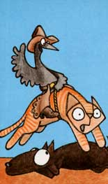

Chicken and I first met on a cold, bleak morning in November. My wife Joan had left for work, and I decided to take a break from my house-building chores and haul a load of rubbish to the dump.
Someone had set fire to the garbage fill, and it was still giving off thick acrid smoke when I arrived. After greeting a few of the townspeople, I began to unload my van. Just as I finished, I heard a low moan-which seemed to come from the center of the dump-and saw what appeared to be a cluster of black ashes rise from the reeking cinders. I stared in amazement . . . then stepped closer to inspect the apparition.
It was a hen . . . featherless except for a black, burned stubble that covered her sooty body. With both eyes caked completely shut, she staggered a few steps and then sank down again, moaning and clucking.
"Hey, someone threw away a chicken," I shouted to no one in particular.
"Just an old hen," someone yelled back. "Probably stopped laying."
"They could've at least killed her first . . . not let her get roasted alive," I protested. "Shouldn't we put her out of her misery?"
"Oh, she's probably diseased," one of the men told me. "I wouldn't touch her if I were you."
Well, I knew nothing about poultry and even less about their diseases, so-after hesitating for a few minutes and feeling helpless-I went home.
But as I worked on the house, I couldn't get the memory of that old hen-dying in the dump-out of my head. By the time the lunch hour rolled around, I'd made up my mind . . . and back I went! She was still there, and-if anything-looked worse than before. However, I was lucky enough to run into a man who raises a lot of poultry, so I showed him the poor scorched bird.
"Just an old hen . . . she'll die soon enough," was the reaction.
"Someone said she might be diseased . . . do you think she is?" I persisted.
"She don't have nothin' you can catch," he answered, and walked away.
That settled it! I picked up the hen (receiving none of the pecks, scratches, and slashes I'd expected), put her in a box, and drove home.
"If you die, Chicken," I told her, "you'll die in comfort, with plenty of food and water nearby."
Days passed, and the hen huddled in the bottom of her box. She drank little and ate less . . . while pity tore at our hearts. Her death might have been a re lief, but a month went by and she was still (more or less) alive.
Then one night-just as we finished supper-Chicken's head suddenly appeared above the rim of the box for the first time. One of her eyes was open, and she began to cluck enthusiastically! We rushed to feed her: table scraps, bread . . . anything we could find. And-boy!-did she eat!
From then on, it was all systems go! Soon Chicken's other eye opened, her feathers began to grow, she became much more active, and her food consumption increased at an alarming rate!
Our cat (Kitty, by name) had shown little interest in the nearly motionless black bundle . . . but now the noisy, periscope-like head-popping up and down in the box-took on a new appeal. Kitty would sit and stare for hours . . . and Chicken stared back.
Before many weeks had gone by, though, the "let's see who blinks first" game got old . . . so Kitty devised a new sport. Periodically (when he thought no one could see him), the cat would reach out and cuff Chicken on the side of the head with his paw, and then jump back before the hen could retaliate. By our count, this scene took place seven times. On the eighth round, however, all hell broke loose!
With one paw on the box, Kitty swung at Chicken's head with the other . . . but the bird ducked. Kitty missed and suddenly found himself off balance. Before the cat could recover, Chicken, in an explosion of feathers, leaped to the edge of the carton and-wings spread like a striking owl-rapped the feline sharply between the eyes with her beak!
Once that mighty victory was under her wings, Chicken would no longer endure the confinement of the cardboard box: We'd put her in, and out she'd fly! We tried covering the box with a screen . . . she knocked it off.
That same evening, we went to visit friends . . . leaving Kitty curled up in front of the stove . . . Charlie (our dog) asleep in the spare bedroom . . . and Chicken secure-we thought-in her box, with the screen held down by some heavy books.
We returned to find dog, cat, and chicken lined up inside the front door-looking for all the world like a trio of naughty children caught robbing the cookie jar-and the house a minor shambles. It was obvious that the hen was responsible for much of the mess, so-the next day-I constructed a pen in the basement . . . and our fine-feathered friend moved downstairs.
A few weeks later-when I came home from some errands-Joan met me at the door to ask, "Are you playing tricks on me?"
"What are you talking about?" I replied, truly puzzled. She led the way down to Chicken's pen, and pointed.
There was an egg in the cage!
Joan thought I'd put it there for a joke. But, no . . . it had to be Chicken's egg! Out came the camera, and the proud mother posed for pictures.
That egg had no yolk . . . but the next oneand all those that followed-were complete. (Chicken has since laid as many as six eggs a week . . . but never "produces" on Saturdays!)
Spring came, and our hen was moved outside. Her coop-a converted woodbox-consists of a large "sitting room", a small back "bedroom", and an outdoor "patio" that she can scratch in.
When the new woodshed is finished, we plan to build a much larger coop with a chicken run on the side for the additional poultry we've decided to keep. But I think Chicken will retain her private quarters . . . because she's special and deserves the best!
As I write this, she's on the porch . . . pecking away at Charlie's food while the dog sits at a respectful distance and glares.
Joan tells me she read somewhere that hens can live for 30 years. I hope it's true!
|
 |
|
|